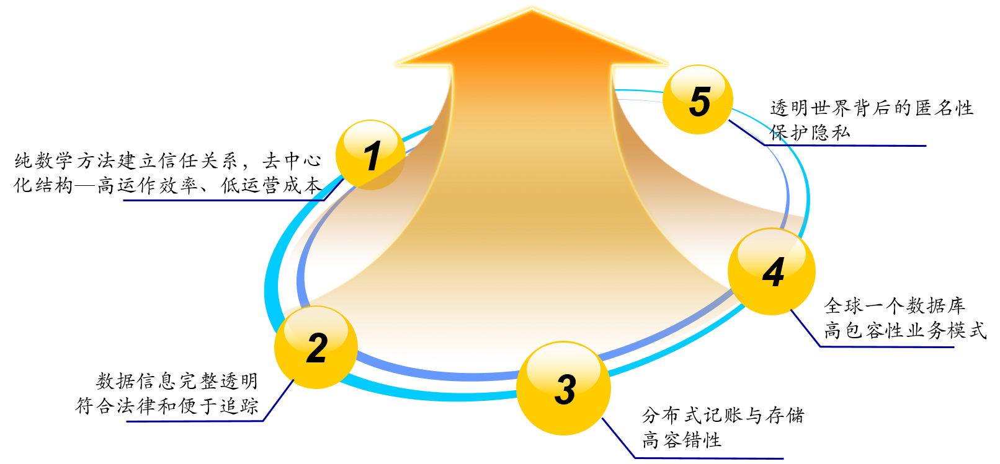
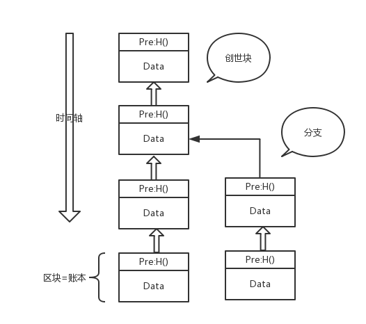
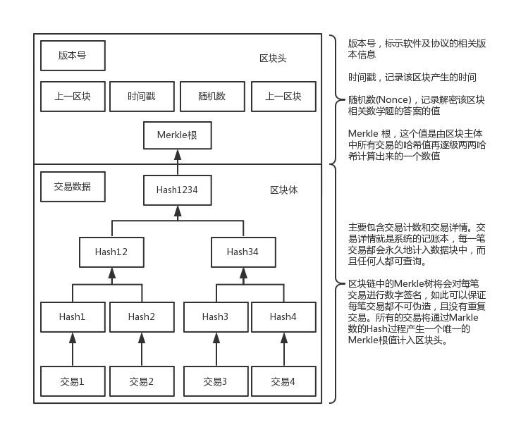
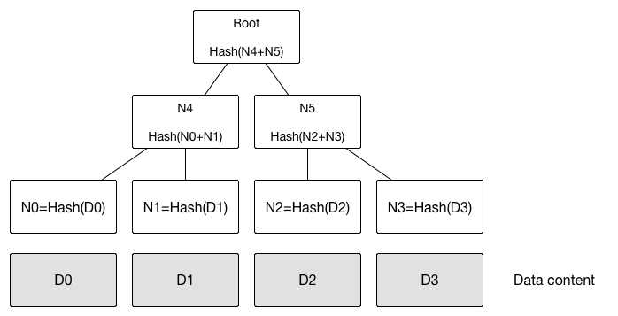
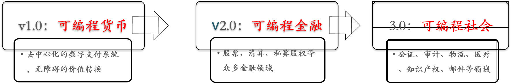
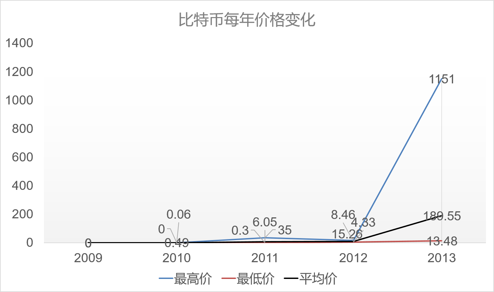
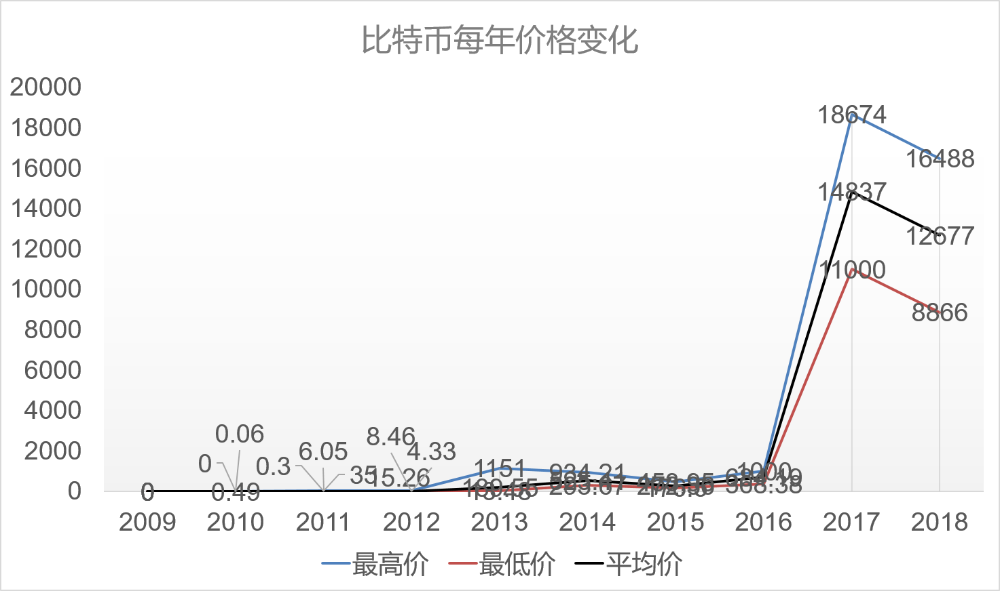

什么是区块链?
区块链（Blockchain）, 是一种加密的、防篡改的、 去中心化的分布式账务管理系统。
它并不是单一的、全新的技术，而是多种技术整合的结果。
从数字货币说起
| 纸币 | 比特币 |
|---|
| 便携 | 弱 | 强 |
| 防伪 | 依赖于设计的方法 | 依赖于密码学 |
| 辨伪 | 容易误判 | 不易出错 |
| 匿名 | 强 | 强（准匿名） |
| 交易 | 简单 | 靠算法机制保证 |
| 资源 | 制造成本 | 算力消耗（电力） |
| 发行 | 第三方机构 | 算法保证 |
为什么会有区块链?
- 去中心化
- 国家货币滥发怎么办？
- 银行人员参与金融犯罪，你的钱还安全吗？
- 不可篡改，可追溯
- 餐厅宣称刚从海里打捞上来的三文鱼，怎么证明捕捞时间和运输中的卫生？
- 开放、共识
- 商贸合作中签订的合同，怎么确保对方能遵守和执行？
- 宇宙不同文明之间的猜疑链，有没有可能打破？
技术特征
百
思
不
解?
复式记账法
- 资产=负债+所有者权益
- 任何一项经济业务都会引起资产与权益之间至少两个项目发生增减变动
- 每一笔经济业务的发生，都可以以相等的金额在两个或两个相关账户中作等额双重记录
- 将对账验证功能引入记账过程，提升了记账的可靠性
Chain
 Block...
区块链分叉
Solutions:
- 通过贡献算力来创建新的区块，不止一个节点能计算出当前区块
- 在区块链中篡改数据会产生链条分叉，篡改难度极高。
- 最长的链条才被全网公认。
- 区块链的不可篡改性由工作量证明机制与共识机制共同保证。
分布式系统核心问题
- 数据一致性(Consistency)
- 节点之间的网络是不可靠的，包括任意的延迟和内容故障
- 节点的处理可能是错误的，甚至节点随时可能宕机；
- 同步调用让节点之间过于耦合，不利于扩充
分布式系统要求 理想的分布式系统一致性应当满足.
可终止性（ Termination ）：一致的结果在有限时间内能完成；共识性（ Consensus）：不同节点最终完成决策的结果应该相同；合法性（ Validity）：决策的结果必须是其它进程提出的提案。 强一致性要求.
顺序一致性(Sequential Consistency）- 保证所有进程看到全局顺序执行一致
- 并且每个进程看自身的执行跟实际发生顺序一致
线性一致性(Linearizablility Consistency） 共识算法 把故障（不响应）的情况称为―非拜占庭错误，恶意响应的情况称为―拜占庭错误
非拜占庭错误算法- Paxos:分布式的系统中存在故障（fault），但不存在恶意（corrupt）节点场景（即可能消息丢失或重复，但无错误消息）下的共识达成（Consensus）问题。
- Raft：Paxos算法的简化版
- Leader、candidate、follower
拜占庭错误算法- PBFT（Practical Byzantine Fault Tolerant）:当系统中有三分之二的节点正常工作，则可以保证一致性
- PoW（Proof of Work）：工作量证明，限制一段时间内整个网络中出现提案的个数（增加提案成本）。
为什么要数据加密？
| 维度 | 描述 | 常见算法 |
|---|
| 保密性 | 特定的接收者才能查看内容 | DES、AES，RSA |
| 完整性 | 确保数据不被篡改 | 数字摘要：MD5、SHA |
| 认证 | 数字签名提供认证服务 | HMAC、盲签名、群签名 |
| 不可抵赖性 | 数字签名证明信息交换确切发生 | HMAC、RSA |
数字证书（CA）：为确保公钥的有效性PKI（Public Key Infrastructure）：为确保数字证书的有效性Merkle 树:

- 快速比较大量数据：当两个默克尔树根相同时，则意味着所代表的数据必然相同
- 快速定位修改
- 零知识证明
区块链分类
公有链：无官方组织及管理机构，无中心服务器，参与的节点按照系统规则自由接入网络，不受控制，节点间基于共识机制开展工作。 私有链：部署在某个企业内部，系统的运作规则根据内部要求进行设定，修改甚至是读取权限仅限于少数节点。 联盟链：由若干机构联合发起，介于公有链和私有链之间，兼具部分去中心化的特征。 应用领域变迁
疯狂的比特币
- 2008-10-31：中本聪发表论文《比特币：种点对点的电子现金系统》
- 2009-1-3：比特币创世区块（Genesis Block）诞生，第一批比特币被挖出
- 2010-5-22：比特币历史上第一笔交易：佛罗里达程序员LaszloHanyecz用1万个比特币购买了价值25美元的披萨
 
Thank You!
Q&A